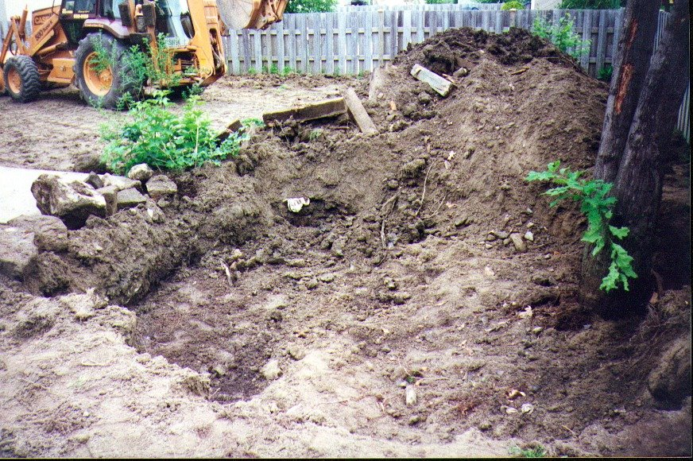
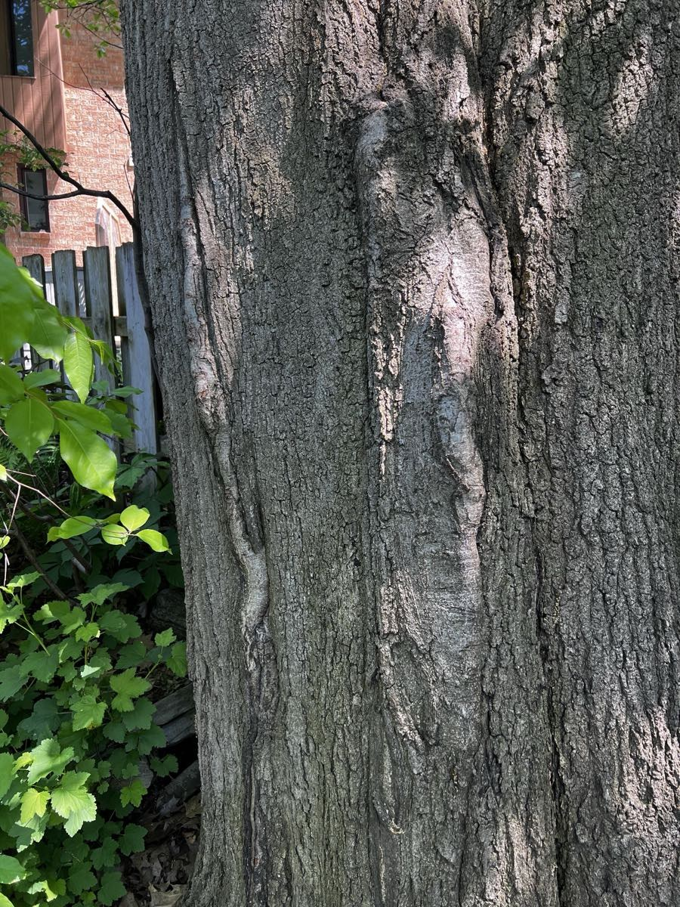
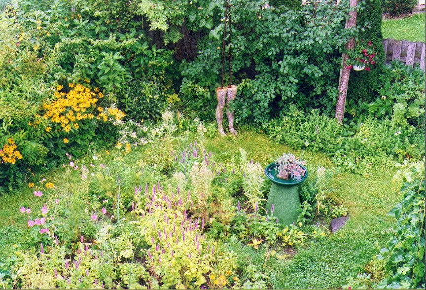

À Longueuil, derrière un bungalow comme les autres, un homme de 79 ans cultive depuis plus de trente ans une forêt miniature. Au centre, un chêne qu’il a sauvé, et qui lui a rendu la pareille. Serge Roy, éducateur, pionnier des réseaux et pratiquant zen, dit de son jardin qu’il est « une part de l’œuvre de ma vie ». Visite guidée, d’Acton Vale à Longueuil, du potager rectiligne d’un père au kōan d’un maître zen.
Il faut lever la tête pour comprendre. Le chêne monte en deux troncs qui, dit Serge Roy, « s’entrelacent et s’étreignent ». Au printemps, le feuillage est d’un vert si tendre que la lumière le traverse. En automne, il roussit et s’enflamme. L’hiver, la nuit, la lune se pose dans ses branches nues. L’homme qui l’a photographié sous toutes ses saisons a résumé la chose en une phrase : « Le chêne dans le jardin, jamais le même à travers les saisons, ni le jour ni la nuit… »

Autour, rien de standard. Pas de gazon tondu ras, pas de haie taillée bien droite. Des arbres, des petits fruits, des plantes indigènes « le plus souvent comestibles, quelquefois médicinales », une fontaine qui gazouille, des oiseaux « plus nombreux chaque année ». Dans une note griffonnée un jour de 2016, Serge Roy a trouvé le mot juste : « Un jardin en continuelle création… »
Le jardin rectiligne de Rosaire
L’histoire commence ailleurs, à Acton Vale, dans les années 1950. Rosaire Roy travaille à l’Acton Shoe, à deux minutes de la maison de la rue Lemay. Neuf enfants à nourrir avec un salaire d’ouvrier. Alors Rosaire jardine. D’abord par nécessité.
« Mon père jardinait pour nourrir sa famille, jusqu’à ce qu’il découvre le plaisir de jardiner », raconte son fils. « Pour moi, ce fut la plus grande découverte de ma vie : voir un père industrieux et bourru se transformer en homme de nature heureux. »
Le jardin de Rosaire est un potager « tout à fait rectiligne », qu’on nettoie à la terre chaque automne. Le maïs y monte si haut qu’il faut grimper sur un escabeau pour en atteindre le sommet, et une photo de famille le prouve. Le petit Serge, lui, n’aime pas tellement les corvées, comme l’arrachage des cotons de blé d’Inde à la fin de l’été. « Il devait tout me montrer, moi qui ne savais rien. Mais, dans son univers, la pédagogie n’avait pas encore été inventée. »

Les frères et sœurs, eux, ont gardé des images précises. Jean-Noël se souvient « d’un plant d’asperges qu’on ne pouvait manger, parce que c’était la plante favorite de maman », d’un tas de compost « qui nous récompensait avec une récolte de vers sur demande », de la rhubarbe « défendue bec et ongle », et des soupers de tomates et de radis « assis sur les marches du perron arrière ». Mariette, elle, revoit son père en promenade : « Il prenait le temps d’arrêter et de remercier Dieu pour tant de beauté. »
Car il y a aussi Yvonne. Les légumes du jardin passent par ses mains, et elle est « une bonne cuisinière ». Elle a ses coins à elle : l’asperge, sa plate-bande de fleurs. Son fils la soupçonne même d’être à l’origine de tout : « Une mère est d’abord une pourvoyeuse, et ce n’est pas certain que Rosaire avait eu spontanément cette vocation de jardinier. »
À l’usine, Rosaire obéit. Au jardin, il devient autre chose. Serge Roy l’a écrit pour l’album souvenir des familles d’Acton Vale : « Dans son jardin, Rosaire troquait son rôle d’ouvrier obéissant pour celui de poète. » Et pour lui-même, plus simplement : « Le jardin, voilà le lieu de l’épanouissement. »
La terre de Caïn
Il aura fallu une génération pour que la graine germe. « Mon père avait semé en moi cet élan, mais il m’a fallu le découvrir par moi-même. »
À l’automne 1992, Serge Roy et sa conjointe, Colette, s’installent à Longueuil. Le terrain est un gazon de banlieue « mur à mur ». Sous le gazon, mauvaise surprise : « Notre terrain est la terre de Caïn. Impossible de planter quoi que ce soit. » Le fond est fait de la glaise excavée pour construire les maisons.
Au printemps 1993, un tracteur jaune vient arracher le gazon et la mauvaise terre. Et l’on découvre le chêne. Un grand arbre « épargné par les constructeurs », mais pris dans un carcan de bois, le sol remblayé bien au-dessus de son niveau d’origine, pour faire un terrain bien plat. Sur son écorce, de longues cicatrices. On les croit alors les « symptômes de sa mort lente ».

« Comme un rare témoin de la forêt qui a précédé nos bungalows, la place d’honneur lui revenait pour la suite du monde. » Le couple dégage l’arbre et ramène le sol à son niveau original. Le jardin entier se réorganise autour de lui, comme un prolongement de la forêt du parc voisin. Des fermiers urbains, dit-il, « à échelle réduite ».
Trente-trois ans plus tard, en 2026, Serge Roy photographie de nouveau le tronc. Les cicatrices se sont refermées. L’arbre a survécu, puis prospéré.


De l’intervenant au collaborateur
Ce qui frappe, quand on lit les textes de Serge Roy sur son jardin, c’est qu’il y parle moins de jardinage que d’apprentissage. Normal : il a passé sa vie professionnelle dans l’éducation. « On ne finit jamais d’apprendre : la vie, c’est apprendre ou à laisser. »
Le jardin, écrit-il, est « un maître exigeant, mais indulgent, qui nous donne sans cesse à voir et à comprendre sans nous pointer du doigt ». C’est aussi un gymnase : « sans tapis roulant, ni autre moteur que la force que j’y déploie ». On y a les mains sales et les souliers boueux, mais on y marche aussi « pieds nus dans l’aube ».
Avec les années, le jardinier a changé de rôle. « Je ne cultive presque plus, j’entretiens un petit royaume qui a sa vie propre. Cette vie n’est pas sous mon contrôle, elle a sa destinée ; d’intervenant, je me suis transformé en collaborateur. » Le potager du centre s’est effacé sous l’ombre des arbres, et le jardinier a laissé faire. Il observe la lumière qui voyage d’une saison à l’autre, l’eau qui se rassemble au printemps. Il a appris que « la diversité crée l’équilibre », et que le jardinier peut alors « accompagner plutôt que diriger ».

Un été de 2024, devant ce qu’il voyait pousser, il a noté : « J’ai créé un lieu dont je ne connaissais pas l’existence. Ce que je regarde dépasse de loin ma vision de départ. Laissez la vie s’occuper du reste… »
« Le chêne est dans le jardin »
Puis il y a l’autre face du jardin, la plus secrète. Serge Roy pratique le zen au Centre Zen de Montréal, auprès d’Albert Low. Pour l’accepter comme étudiant, le maître lui pose trois questions. La première : « Désires-tu vraiment et profondément connaître qui tu es ? »
Le premier kōan qu’il lui confie est justement celui-là : « Qui suis-je ? » Et au dokusan, l’entretien privé avec le maître, Albert Low ne veut pas qu’on en discute. Il veut qu’on le lui montre. Pour l’exemple, il cite une réponse célèbre du maître chinois Joshu. Seulement, le mot lui échappe un peu en français : « Le chénier est dans le jardin… l’arbre est dans le jardin. »
« Ce qu’il ne savait pas non plus, raconte Serge Roy, c’est qu’un chêne est la pièce maîtresse de mon jardin. Pour moi, le jardinier, son exemple avait une résonance toute particulière. »
De retour chez lui, il découvre dans un livre d’Albert Low que la réponse de Joshu ne répond pas du tout à la question « Qui suis-je ? ». Le maître voulait-il le tromper ou le déboussoler ? « De me déboussoler certainement, me tromper non, car chaque kōan nous ramène à la question "Qui suis-je ?" »
Albert Low est mort en 2016. Son élève n’a jamais eu l’occasion de lui « démontrer » sa réponse. Mais le chêne est toujours là, dans la cour, et la lune l’éclaire encore. « La lune, comme mon maître, éclaire le chêne dans mon jardin. » Le maître, dans un de ses livres, conseillait de s’asseoir en méditation comme un chêne, « tout d’un bloc, totalement un ». Le jardinier, lui, a conclu par une ligne : « Ma nature d’arbre, ma nature de bouddha. »

Le jardinier étrange
Le zen, au jardin, ne se pratique pas seulement assis. Dans une note de 2017, Serge Roy a rangé deux remèdes contre un monde qui accélère. Le premier : « Jardiner nous connecte avec le processus et les aléas de la vie. » Le second : le taïchi, qu’il pratique depuis plus de trente ans, « dans la lenteur des mouvements ». La conclusion vaut pour les deux : « L’accélération du monde n’est qu’une voie parmi d’autres… »
La même année, une autre note tient en deux lignes, comme un haïku :
Jardinier étrange
cultive le silence
Le silence, chez lui, n’a rien de solennel. Il y a de l’humour dans ce jardin. Une note de 2024 s’intitule « Les fables de mon jardin » : « Pourquoi nous, les humains, n’avons jamais mangé nos tulipes ? Alors que les chevreuils et les marmottes s’en font un régal au printemps. Ils se privent de la beauté des fleurs, ce que nous avons privilégié. » Et une autre, toute récente, renverse les rôles : « Dans un jardin, qui est le jardinier ? L’écureuil qui cache ses noix, la cigale qui chante sa partition ? Les abeilles qui pollinisent les fleurs ? »
Car il ne jardine pas seul, ni seulement pour lui. « Je travaille pour mère Nature, écrivait-il en 2018. Un petit peu pour les oiseaux, aussi pour les écureuils et les chevreuils. Encore un peu pour nous. » L’hiver, le jardin déménage à l’intérieur : en 2015, il invitait ses amis à « l’ouverture de mon jardin d’hiver », pour « partager la lumière de mes plantes ».
Le réseau le plus convivial
Il y a une ironie dans cette histoire. En 1996, Serge Roy a déposé un mémoire de maîtrise sur les « réseaux conviviaux ». Il y rêvait, avec le penseur Ivan Illich, d’outils technologiques qui relient les gens au lieu de les asservir. Trente ans plus tard, c’est dans la terre de Longueuil qu’il a trouvé le réseau qu’il cherchait.
« Mon jardin, une part de l’œuvre de ma vie, est un réseau convivial comme je l’avais imaginé avec des moyens technologiques. Mais la vie est le réseau le plus énergétique et convivial que je connaisse, et je suis heureux d’en faire partie. »
Le jardin nourrit aussi le reste de sa vie. Une pomme chaque matin, à jeun, depuis quarante ans. Des petits fruits, des tomates, du pain fait maison. « Comme je jardine, j’aime tout ce qui est frais. » Colette s’installe à la table du jardin pour écrire et peindre, parmi les iris violets. Et le jardin sert maintenant de toile de fond à ses collages, qu’il a baptisés « Paysages choisis ».

C’est encore mon père qui jardine
Entre le potager tout en lignes droites d’Acton Vale et la forêt buissonnante de Longueuil, il y a « tout un monde, une génération ». Pourtant, quand on lui demande d’où lui vient tout cela, Serge Roy revient toujours au même endroit, au même homme.
En 2014, il a rapporté de l’Université Harvard trois glands de chêne. Dans une autre note, il a recopié une phrase de Tagore : « Celui qui plante des arbres tout en sachant qu’il ne pourra profiter de leur ombre vient de commencer à comprendre le sens de la vie. » Et il a écrit, comme on conclut un conte :
« Il y avait un jardin que l’on appelait la Terre, et j’y étais petit jardinier… »
Depuis qu’on l’a libéré, le chêne a « triplé sa structure à double tronc ». Le jardinier, lui, a fini par trouver les mots pour dire ce qu’il fait là, tous les jours, depuis trente-trois ans :
« Malgré toutes ces différences, c’est encore mon père qui jardine. »